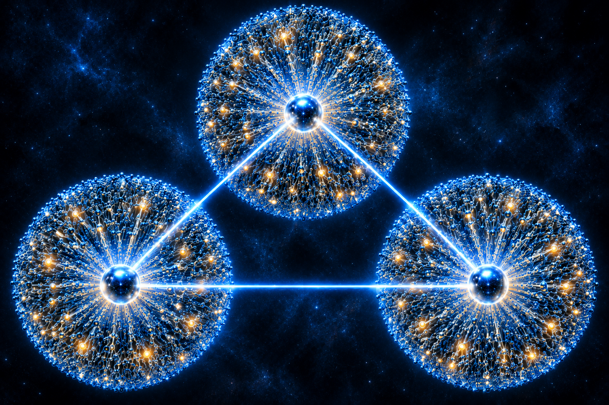
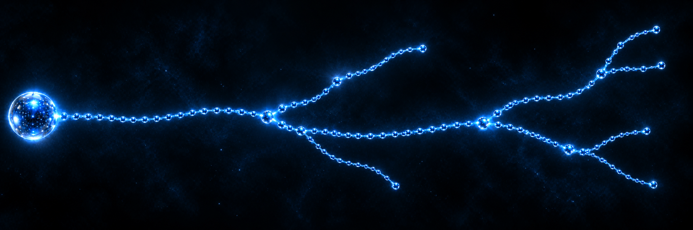

Sequential transitions
To reach a distant Plan, travellers must pass through the intermediate Plans. An ordinary transition cannot skip them.
01 · General model
A Sphere of Plans is an integrated system of worlds connected around a Central Plan.
Branches extend from the Central Plan. Each branch consists of individual Plans connected by transitions. Branches can split, creating new routes. Every Plan has a defined place in this structure and a route back to the Central Plan.
To reach a distant Plan, travellers must pass through the intermediate Plans. An ordinary transition cannot skip them.
The maximum number of Plans in a Sphere is unknown and may be unlimited. However, each individual branch has its own terminal Plan.
02 · Central nodes
By the end of the second book, three Central Plans are known: the Zero Plan, the First Plan and the Second Plan. The Central Plans are directly connected to one another. Each is the centre of its own branch system.
The central world from which branches coded Z0 are numbered.
The second of the known Central Plans, directly connected to the other central nodes.
The third known Central Plan and the centre of its own branch system.
The Spheres are connected by transitions between their Central Plans. Other forms of connection are addressed separately.

03 · Portal network
A branch begins at a Central Plan. Individual Plans are located along its length and connected by sequential transitions. A line may split at specific nodes; each new branch begins at an existing Plan. Branches can split again.

04 · Coding standard
For cataloguing and navigation between worlds, characterник expeditions use a unified planetary-world code. It identifies the central world, branch, sequential Plan number, world class and danger level.
Z0 — Zero Plan; Z1 — First Plan; Z2 — Second Plan. The first block identifies the Central Plan from which the branches are numbered.
The second number is the portal branch number from the central world. For example, Z0-15 means the fifteenth branch from Z0. Branches may split into further branches. To keep the code manageable, the standard notation records only the first branch from the centre.
The third block is the sequential number of the Plan discovered on that branch. It indicates discovery order, not distance.
The fourth block identifies the world category in the catalogue: Living, Dead, Extreme or Unknown.
The fifth block indicates the current risk assessment for access. It may be revised as new research becomes available.
05 · World catalogue
The letter prefix identifies the general category; the two digits specify the particular world type or condition.
L01Active civilisationL02Primitive civilisationL03ColonyL04Technological civilisationL05World with a biosphere but no civilisationM01Nuclear warM02Resource depletionM03Climate collapseM04PandemicM05Biological weaponsM06Uncontrolled nanotechnologyM07Global toxic contaminationM08Geological weaponM09Planetary collisionM10Unknown cause of extinctionX01No atmosphereX02Acidic surfaceX03Extremely high radiationX04Complete sterilityX05Extremely high temperatureX06Extremely low temperatureX10Spatial anomaly or overlap of PlansU01World not exploredU02Contact lostU03Unstable reality06 · Risk assessment
The fifth block of the code identifies the current danger level of a world. This is an operational assessment for expeditions, not an immutable property; it may be revised after further research.
D1Safe worldD2Limited dangerD3Dangerous worldD4Deadly dangerD5Access prohibited07 · Portal status
Access status is recorded separately from the five-part world code. It describes the current state of the route or portal, not the world’s classification.
OPENAccess openLIMITAccess restrictedSEALEDPortal closedLOSTRoute lostUNSTABLEUnstable portalThe coding system is used by characterник expeditions to maintain world maps, plan transitions and assess risks.